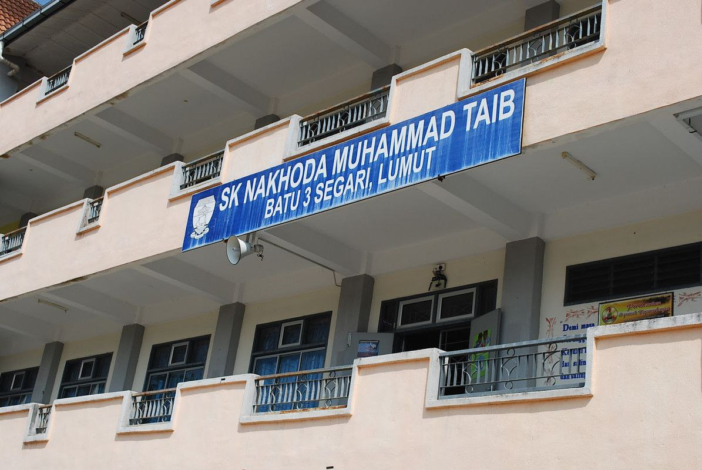
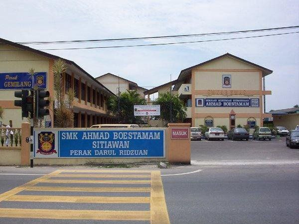
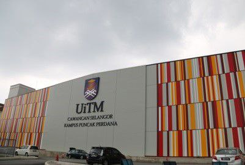

PRIMARY
Sekolah Kebangsaan Nakhoda Muhammad Taib
SKNMT is located at Kampung Batu 3 Segari. It is just a small village school. I succesfully complete my study with 4A1B on my UPSR. I also holding a position as a prefect there for 4 years. The school has 2 main building, a library, 2 labs, a mosque and also a building for kindergarten.
SECONDARY
SMK Ahmad Boestamam
SMK Ahmad Boestamam is located at Sitiawan, Perak. I stayed in school domitary from my first year as a secondary school student. At the forth year i am holding a position as a Pebimbing Rakan Sebaya (PRS). I finished my secondary school there.
HIGHER EDUCATION
SMK Ahmad Boestamam & UITM Puncak Perdana
After finishing my secondary school, I continue my study as a STPM student in SMK Ahmad Boestamam. I study STPM for two years and continue with degree at UiTM Puncak Perdana. My course is in Information Management Library Science.
